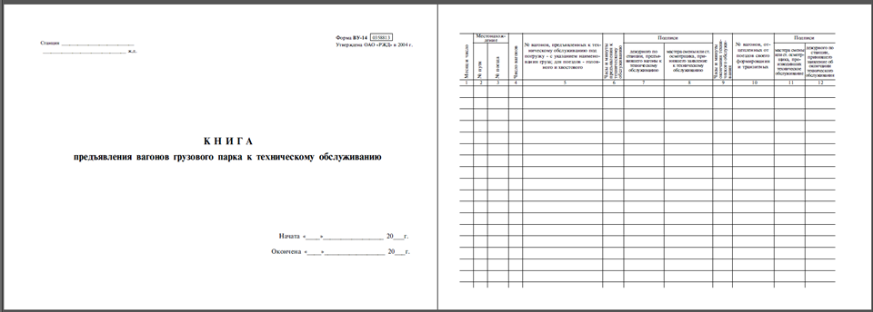

<h3 class="slidename">Книга предъявления вагонов грузового парка к техническому обслуживанию </h3>

<p>Предъявление вагонов к техническому обслуживанию и его результат оформляются в книге формы ВУ-14. </p>

<div class=""></div>


